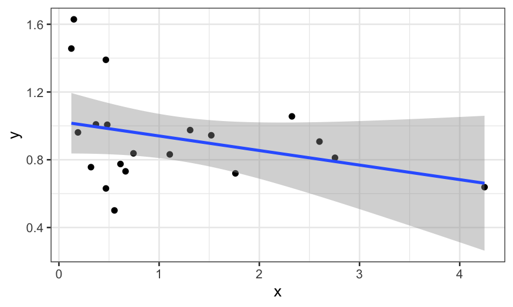
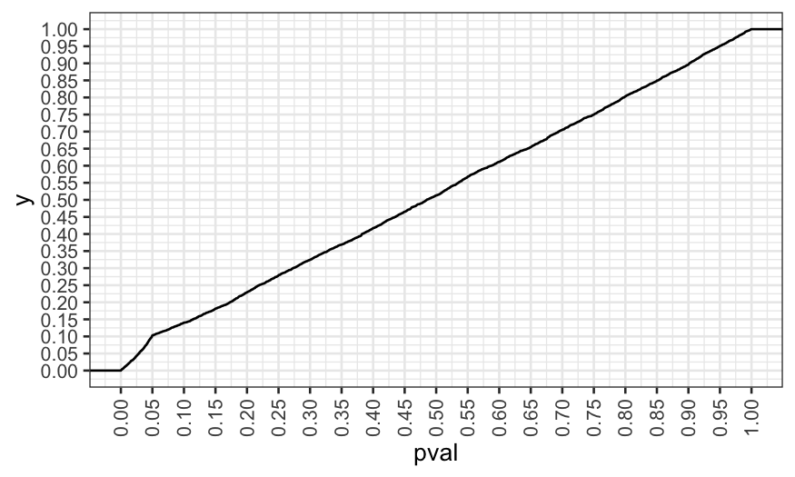
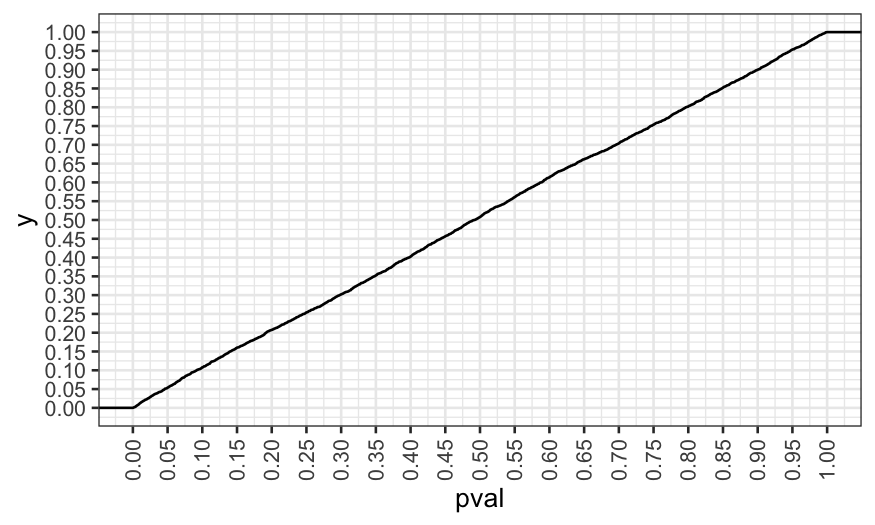

Stat 470/670 Lecture 20: EDA and the Problem of
Multiple Comparisons
Julia Fukuyama
EDA and Multiple Comparisons
Optional reading: Gelman
and Loken
For this lecture, we will talk a little about \(p\)-values.
The standard multiple comparison problem
Suppose a researcher is interested in whether married and unmarried
men have different opinions on gun laws.
He asks married and unmarried men whether they are in favor of
stricter gun laws.
Overall he didn’t see a difference between the two groups, but he
also looked at his data state-by-state and gets the following results
(only the 15 states with the largest absolute differences are
shown):
## State Unmarried Married Difference
## 36 NJ 0.48 0.42 -0.06
## 37 CO 0.50 0.57 0.07
## 38 CT 0.57 0.50 -0.07
## 39 OR 0.53 0.60 0.07
## 40 AK 0.49 0.42 -0.07
## 41 MD 0.51 0.59 0.08
## 42 VA 0.48 0.57 0.09
## 43 SC 0.44 0.53 0.09
## 44 TX 0.42 0.51 0.09
## 45 IL 0.56 0.47 -0.09
## 46 OH 0.51 0.61 0.10
## 47 WV 0.42 0.52 0.10
## 48 ND 0.41 0.59 0.18
## 49 IN 0.39 0.58 0.19
## 50 MI 0.38 0.59 0.21
When he tests for whether the state-by-state differences are
significant, he sees that three are: North Dakota, Indiana, and
Michigan, and in each case married men are more likely to favor stricter
gun laws.
What are some possible explanations for these results?
In this example, we might worry that there is actually no difference
in any of the states, and that we saw the three small \(p\)-values simply by chance.
We can do a little simulation to see what would happen if the true
effect was zero in all of the states: In that case, for each state we
have a \(.05\) chance of getting a
\(p\)-value less than \(.05\) (the definition of a \(p\)-value).
set.seed(2)
# simulate 50 hypothesis tests at .05
rejections = rbinom(50, 1, prob = .05)
# a value of 1 means we rejected the null, a value of 0 means we failed to reject
# here all of the nulls were true, but we rejected 4 of them
rejections
## [1] 0 0 0 0 0 0 0 0 0 0 0 0 0 0 0 0 1 0 0 0 0 0 0 0 0 0 0 0 1 0 0 0 0 0 0 0 0 0
## [39] 0 0 1 0 0 0 0 0 1 0 0 0
We can repeat the example above many times to see how many times we
expect to reject three or more hypotheses out of 50, and we see that
even when all of the nulls are true, we would expect to reject at least
three null hypotheses almost half of the time
n_rejections = rep(NA, 5000)
for(i in 1:5000) {
rejections = rbinom(50, 1, prob = .05)
n_rejections[i] = sum(rejections)
}
table(n_rejections)
## n_rejections
## 0 1 2 3 4 5 6 7 8 9 10 11
## 377 979 1340 1102 695 326 119 45 13 1 2 1
## [1] 0.4608
Testing the global null hypothesis
The hypothesis that all of the individual null hypotheses are true is
referred to as the global null: if \(H_{0i}\) refers to the \(i\)th null hypotheses, the global null
is
\[
H_0 = \cap_{i=1}^n H_{0i},
\] the intersection of all the individual null hypotheses.
Suppose we are interested in testing hypotheses at level \(\alpha\) (we reject with a \(p\)-values less than \(\alpha\))
One of the simplest methods for testing the global null hypothesis is
called Bonferroni’s Method.
The procedure is as follows:
- Test each of the \(n\) individual
hypotheses \(H_{0i}\), \(i = 1,\ldots, n\) at level \(\alpha / n\).
- Reject the global null, \(H_0\),
whenever we reject one of the \(H_{0i}\)’s. If \(p_i\) is the \(p\)-value corresponding to hypothesis \(i\), this amounts to rejecting the global
null \(H_0\) whenever \(\text{min} \; p_i \le \alpha / n\).
Notes
- Bonferroni’s method has the correct size: if the global null is
true, and we test at level \(\alpha\),
we will reject the global null with a rate at most \(\alpha\).
- The more tests we run, the smaller the minimum \(p\)-value has to be for us to reject the
global null. If we’re “fishing” and looking at a lot of possibilities,
we need a lot more evidence than if we had decided in advance what
question we wanted to ask.
- There are other ways of testing the global null, and there is a lot
of research into multiple testing. Even so, Bonferroni’s method is
commonly used as a quick and easy way of correcting for multiple
tests.
Multiple comparisons and EDA
Let’s set up a toy example.
Suppose we are interested in whether two variables, \(x\) and \(y\), are related to each other.
In reality they are not, but we are equipped with the full power of
our EDA course and we are able to try out different transformations of
the variables and different methods to check for the relationship.
## full disclosure: I started the seed at 0 and went up
## until I got a result with a p-value < .05
set.seed(4)
library(broom)
library(MASS)
x = rgamma(20, 1, 1)
y = rgamma(20, 10, 10)
We start off by just plotting \(x\)
vs. \(y\):
ggplot(data.frame(x, y), aes(x = x, y = y))+ geom_point() + stat_smooth(method = "lm")
## `geom_smooth()` using formula = 'y ~ x'

It doesn’t look like there’s much there. However, \(x\) looks like it has heavy tails, and so
maybe we should transform it to reduce the skewness.
Let’s plot \(y\) vs \(\text{log}(x)\):
ggplot(data.frame(x, y), aes(x = log(x), y = y))+ geom_point() + stat_smooth(method = "lm")
## `geom_smooth()` using formula = 'y ~ x'

That’s better, but maybe we should also use robust regression because
we think there might be outliers in \(y\).
We plot the robust smooth as well:
ggplot(data.frame(x, y), aes(x = log(x), y = y))+ geom_point() + stat_smooth(method = "rlm")
## `geom_smooth()` using formula = 'y ~ x'

In the end, we fit three models. Maybe we changed our minds and
decided that robust regression wasn’t necessary and that we think the
linear model with \(y\) predicted by
\(\text{log}(x)\) is the best.
We then want a \(p\)-value for our
collaborators or to publish, and we are happy to see that the
coefficient is significant:
## # A tibble: 2 × 5
## term estimate std.error statistic p.value
## <chr> <dbl> <dbl> <dbl> <dbl>
## 1 (Intercept) 0.885 0.0595 14.9 1.51e-11
## 2 log(x) -0.141 0.0583 -2.43 2.60e- 2
What is the problem here?
Let’s look at the \(p\)-values for
the other two models that we rejected:
## # A tibble: 2 × 5
## term estimate std.error statistic p.value
## <chr> <dbl> <dbl> <dbl> <dbl>
## 1 (Intercept) 1.03 0.0901 11.4 0.00000000116
## 2 x -0.0859 0.0577 -1.49 0.154
## # A tibble: 2 × 4
## term estimate std.error statistic
## <chr> <dbl> <dbl> <dbl>
## 1 (Intercept) 0.880 0.0645 13.6
## 2 log(x) -0.111 0.0631 -1.76
## the corresponding p-value for rlm:
pnorm(abs(tidy(rlm(y ~ log(x)))[2, "statistic", drop = TRUE]), lower.tail = FALSE) * 2
## [1] 0.07833073
Neither of the other two models would have given us a significant
result at the \(.05\) level: the \(p\)-values were \(.15\) and \(.08\).
The problem is that if the other models had looked better to us, we
might have used the \(p\)-values from
them instead of from the model we chose, and so we are implicitly or
unconsciously performing multiple tests.
To see why this invalidates our \(p\)-values, suppose we ungenerously
describe the procedure we used to come up with our model as follows:
- Fit a linear model of \(y\)
described by \(x\). If that has a
significant \(p\)-value, stop and
report that \(p\)-value.
Otherwise…
- Fit a linear model of \(y\)
described by \(\text{log}(x)\). If that
has a significant \(p\)-value, stop and
report that \(p\)-value.
Otherwise…
- Fit a robust linear model of \(y\)
described by \(\text{log}(x)\). Report
that \(p\)-value because you’re out of
time.
What fraction of the time will you reject the null hypothesis?
We can see what happens by simulation:
pvals = rep(NA, 5000)
for(i in 1:5000) {
x = rgamma(20, 1, 1)
y = rgamma(20, 10, 10)
out.lm = lm(y ~ x)
pval = tidy(out.lm)[2,"p.value", drop=TRUE]
if(pval > .05) {
out.lm = lm(y ~ log(x))
pval = tidy(out.lm)[2,"p.value", drop=TRUE]
}
if(pval > .05) {
out.lm = rlm(y ~ log(x))
pval = pnorm(-abs(tidy(out.lm)[2, "statistic", drop=TRUE])) * 2
}
pvals[i] = pval
}
We reject at the \(.05\) level about
twice as much as we should, and so reporting the nominal \(p\)-value would be misleading here.
## [1] 0.103
ggplot(data.frame(pval = pvals)) +
stat_ecdf(aes(x = pval)) +
scale_x_continuous(breaks = seq(0, 1, by = .05)) +
scale_y_continuous(breaks = seq(0, 1, by = .05)) +
theme(axis.text.x = element_text(angle = 90, vjust = .5))

In our simulation, we made modeling decisions explicitly based on
\(p\)-values. You can invalidate your
\(p\)-values even if you make the
decisions without actually looking at the \(p\)-values, it’s just easier to simulate
this way.
Note 1
Notice that this isn’t quite as bad as running three independent
tests: in that case we would expect about \(14\)% of the \(p\)-values to be less than \(.05\), but here we only get about \(10\)%.
## .95^3 is the probability that you fail to reject
## three null hypotheses at the .05 level, and so the
## following is the probability that you reject at
## least one of three null hypotheses at the .05 level
1 - .95^3
## [1] 0.142625
Note 2
We only looked at three models/potential tests in the simulation
here, but the problem can be much, much worse. We have:
- Multiple ways to transform each of the predictors,
- Multiple ways to transform the response,
- Choices about excluding outliers,
- Choices about how to code variables,
- Tunable parameters in the models we use (e.g. the span parameter in
LOESS),
- Decisions about whether and which interactions to fit
This can lead to an enormous number of potential tests: Suppose you
have two predictors, four ways of transforming predictors, three
potential outliers, two coding choices, and five potential models. This
gives \[
4 \times 4 \times 4 \times 2^3 \times 2 \times 5 = 5120
\] distinct combinations of analysis choices.
In principle, we could count up all the possible tests and do a
Bonferroni correction, but in practice the Bonferroni cutoff will be too
strict for you to ever reject.
Note 3
Exploration doesn’t always invalidate your \(p\)-values, only if you do it while looking
at the relationship you want to test.
- You can do anything to the predictors before you see the response
and still get valid \(p\)-values.
- If you make decisions about transformations of the response without
seeing how it relates to the predictors, you can still have valid \(p\)-values.
Let’s try another simulation to illustrate the point above.
Suppose we have the same setup as in the first simulation, but now we
decide whether or not to transform \(x\) and \(y\) based on how skewed they are instead of
of based on the significance of the relationship.
Our procedure:
- If \(x\) has a skewness larger than
\(1.5\), use a log transformation of
\(x\) in the model.
- If \(y\) has a skewness larger than
\(1\), use a log transformation of
\(y\) in the model.
- Fit a linear model and report a \(p\)-value.
pvals2 = rep(NA, 5000)
for(i in 1:5000){
x = rgamma(20, 1, 1)
y = rgamma(20, 10, 10)
if(skewness(x) > 1.5)
x = log(x)
if(skewness(y) > 1)
y = log(y)
out.lm = lm(y ~ x)
pvals2[i] = tidy(out.lm)[2,"p.value", drop = TRUE]
}
Now we see that the \(p\)-values are
distributed the way they should be. In this case, looking at the
variables and transforming them didn’t invalidate our \(p\)-values.
## [1] 0.0536
ggplot(data.frame(pval = pvals2)) +
stat_ecdf(aes(x = pval)) +
scale_x_continuous(breaks = seq(0, 1, by = .05)) +
scale_y_continuous(breaks = seq(0, 1, by = .05)) +
theme(axis.text.x = element_text(angle = 90, vjust = .5))

Remedies
Report the results as exploratory. Describe all the choices made
and everything you looked at so that the reader can make his or her own
judgment about whether the results are real or due to chance.
New data: Perform exploratory analysis, identify some hypotheses
that you would like to test (how you will transform the predictors and
responses, how you will code variables, what model you will use, what
tunable parameters you will use, etc.). Test those hypotheses on a new
dataset that you’ve never seen before.
Split the data into exploration and validation sets before you
begin. Do the exploratory analysis on the exploration set, identify
specific hypotheses to test, and test them on the validation
set.